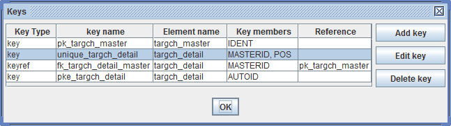
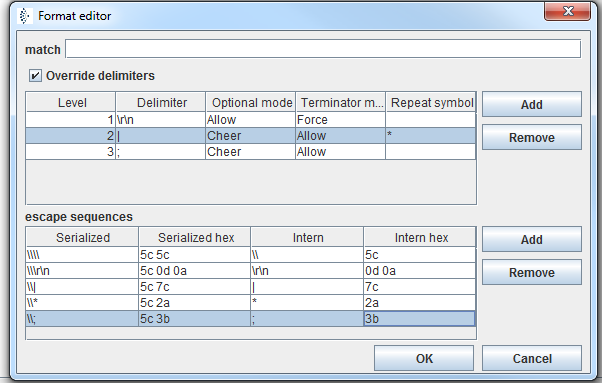

Edit Keys and Edit Format

Topic content
Edit the keys of the message type
In XML schema it is possible to define keys. That is a set of elements whose values identify an element in its parents context. In Orchestra this feature is used only if the message was imported from a database (see Import from Database). Actually keys in this case are the primary key, the unique keys and the foreign keys of the imported tables. This information is then used in the Database Target and the Database Source Reader.
To edit the keys click on the button

Typically these keys are created automatically if you import a message from a database. But sometimes it may be necessary to define and edit keys here. This means that you define constraints for the messages having this message type; it doesn't change the database where the message was imported from.
If you click on you can define a new key.
Edit the format of a message type
For a INTERNAL message format it is possible to define a set of delimiters. The Format editor is invoked by clicking Edit format button. This button is only enabled if the is INTERNAL. The dialog was created to resemble similar dialogs in eGate because originally the INTERNAL format was used for message imported from OTD (Object type descriptions, see Import from OTD).
This Format Editor is used in the external data representation for that node and its descendents.
By enabling the check box Override delimiters, you can change delimiters defined for the selected element itself and its sub elements (descendents).
Clicking within a field in the Editor enables the field for editing. After typing a value into a field, you must press Enter to set the value. Clicking inside the fields Optional mode or Terminator mode will show you a drop-down menu.
The following picture shows the format of a message type consisting of three levels of information. When serializing messages of this type, the elements under the root node (the records) are delimited by a newline (carriage return and line feed). The elements in level 2 (the fields) are delimited by a pipe, and subfields are delimited by a circumflex.
Typically the delimiters for the levels of a structured message are all defined in the root node. In very rare cases it may be necessary to change the delimiters for one special node. In this case you have to select that node, click and then enable the check box . See Type based serializer and Type based deserializer for details about how to work with internal message types.

To include your delimiter inside your string literal your need to escape it. The backslash ("\") is used as escape character in Orchestra. If you need to escape a backslash for it self you need to use it twice. Check the examples in the figure above. Here you can see escaping of a Pipe, Asterisk, semicolon, backslash and a CRLF (carriage return line feed)
Example:
If a message of this type (see figure above) is serialized the result may look like
PD001|Georg|Maier|12;11,1987
ADR|86150|Augsburg|Hoher Weg;1
TEL|0821|345678
TEL|0711|456789
PD012|Andreas|Müller|01;10;1969
ADR|86150|Augsburg|Ludwigstrasse;3
Format editor Command Buttons:
Command |
Action |
Add (delimiter level) |
Adds a new level after the selected level. |
Remove (delimiter level) |
Deletes the selected line item (level) from the list. |
Add (escape sequence) |
Adds a new escape sequence after the selected line. |
Remove (escape sequence) |
Deletes the selected line item (sequence) from the list. |
OK |
Saves your entries and closes the editor. |
Cancel |
Discards your entries and closes the editor. |
Delimiter Properties:
Property |
Description |
Level |
Assigns consecutive sets of delimiter parameters to delimited nodes in the Encoder node hierarchy. |
Delimiter |
any alphanumeric sign(s) also control characters e.g. \r \n |
Optional mode |
Specifies how delimiters for optional nodes are to be handled when the nodes are absent from the input instance or when their fields are empty. (See Optional mode for additional information.) |
Terminator mode |
Specifies how delimiters are to be handled for a specific terminator node. (See Terminator mode for additional information.) |
Repeat symbol |
any alphanumeric sign(s), a repeat delimiter is used delimit the repetitive occurrences. |
Escape sequence Properties: (this Table acts like a translation table)
Property |
Description |
Serialized |
character sequence to escape a delimiter in the serialized external form of the input message |
Serialized hex |
hexadecimal representation of the serialized form ( filled automatically) |
Intern |
DOM tree representation of character sequence |
Intern hex |
hexadecimal representation DOM tree character sequence (filled automatically) |
Optional mode Options:
Option |
Description |
Input |
Output |
Never |
If the node is absent, the delimiter is not allowed in either input or output. |
E1: b*d^ E2: b^ |
E1: b*d^ E2: b^ |
Allow |
If the node is absent, the delimiter is allowed in input but will not be emitted in output. |
E1: b**d^ E2: b^, b*^ or b**^ |
E1: b*d^ E2: b^ |
Cheer |
If the node is absent, the delimiter is allowed in input and will also be emitted in output. |
E1: b**d^ E2: b^, b*^ or b**^ |
E1: b**d^ E2: b**^ |
Force |
If the node is absent, the delimiter must appear in input and will be emitted in output. Note: Only this option allows trailing delimiters for a sequence of absent optional nodes. |
E1: b**d^ E2: b**^ |
E1: b**d^ E2: b**^ |
As examples, consider the structures, where the node a has a caret (^) as its delimiter, and the child nodes b, c, and d all have asterisks (*) as their delimiters.
Example 1: Child node c is optional. (Child nodes c and d must have different values for the match parameter.) [ a^b*c?*d? ]
Example 2: Child nodes c and d are both optional. [ a^b*c?*d ]
Terminator mode Options:
Option |
Description |
Input |
Output |
Never |
Specifies that the delimiter is not allowed to be a terminator in input and will not be emitted as terminator in output. |
c^ |
c^ |
Allow |
Specifies that the delimiter is allowed to be a terminator in input but will not be emitted as terminator in output. |
c^ or c*^ |
c^ |
Cheer |
Specifies that the delimiter is allowed to be a terminator in input and will be emitted as terminator in output. |
c^ or c*^ |
c*^ |
Force |
Specifies that the delimiter must appear as a terminator in input and will also be emitted as terminator in output. |
c*^ |
c*^ |
Consider the structures, where the node a has a caret (^) as its delimiter, and its child nodes b and c have asterisks (*) as their delimiters. [ a^b*c* ]